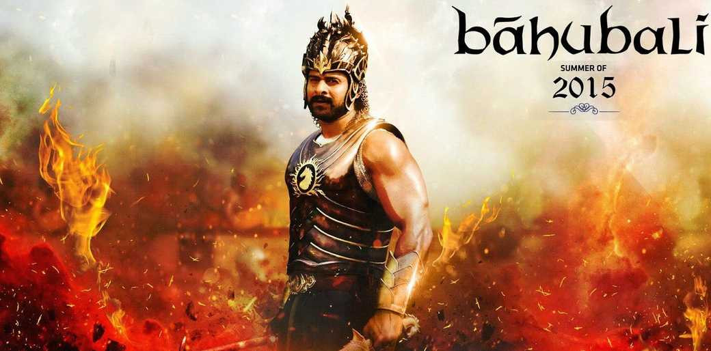

Movies
Movies are a magical form of entertainment that can transport
us to different worlds and tell powerful stories. This section is dedicated to the films that have had
the biggest impact on me.
1.Avengers: Endgame
The remaining Avengers must figure out a way to bring back their vanquished allies for an epic showdown with Thanos — the evil demigod who decimated the planet and the universe.
Genre: Action, Sci-Fi, Adventure
Director: Anthony & Joe Russo
My Rating: 10/10
"The epic conclusion to the Infinity Saga, a truly emotional and satisfying finale."
2.Spider-Man: No Way Home
With Spider-Man's identity now revealed, Peter Parker asks for help from Doctor Strange. When a spell goes
wrong, dangerous foes from other worlds start to appear, forcing him to discover what it truly means to be
Spider-Man.
Genre: Action, Adventure, Fantasy
Director: Jon Watts
My Rating: 9/10
"A nostalgic and emotionally powerful tribute to the legacy of Spider-Man."
3.Avatar: The Way of Water
Jake Sully and Ney'tiri have formed a family and are doing everything to stay together. However, they must leave their home and explore the regions of Pandora when an ancient threat resurfaces.
Genre: Sci-Fi, Action, Adventure
Director: James Cameron
My Rating: 9/10
"A stunning return to Pandora with breathtaking underwater visuals."
4.Baahubali: The Beginning

In ancient India, an adventurous and daring man becomes involved in a decades-old feud between two warring
kingdoms.
Genre: Action, Drama, Fantasy
Director: S. S. Rajamouli
My Rating: 9/10
"An epic Indian tale of mythic proportions with stunning visuals and action."
5.3 Idiots
Two friends are searching for their long lost companion. They revisit their college days and recall the
memories of their friend who inspired them to think differently, even as the rest of the world called them
"idiots".
Genre: Comedy, Drama
Director: Rajkumar Hirani
My Rating: 10/10
"A heartwarming and hilarious film with a powerful message about education and life."
6.RRR

A fictitious story about two legendary revolutionaries and their journey away from home before they started fighting for their country in the 1920s.
Genre: Action, Drama
Director: S. S. Rajamouli
My Rating: 10/10
"An electrifying and over-the-top action epic with incredible spectacle and heart."